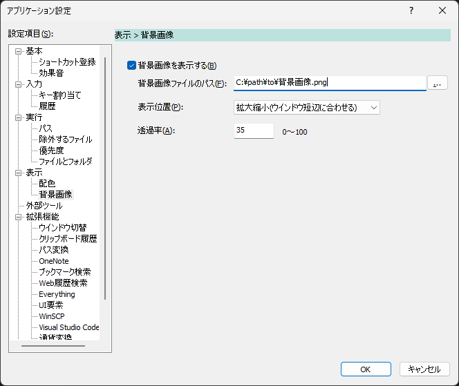
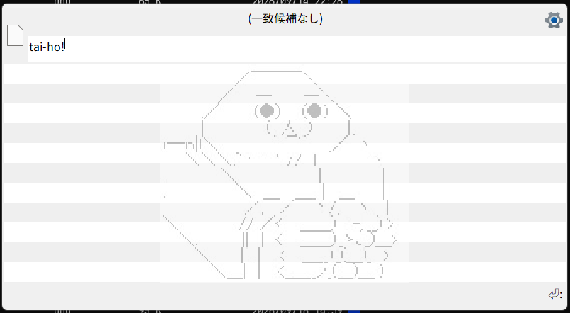

表示＞背景画像
候補欄の背景に画像を表示するための設定を行う。

背景画像を表示する候補欄の背景に画像を表示する
チェックを外すと、候補欄の背景色だけを表示する
画像ファイル背景に表示する画像ファイルを指定する
参照ボタンから画像ファイルを選択できる対応する画像形式は
.bmp、.jpg、.jpeg、.png、.gif
表示位置背景画像を候補欄のどこに表示するかを指定する
左上画像を候補欄の左上に表示する
右上画像を候補欄の右上に表示する
中央画像を候補欄の中央に表示する
左下画像を候補欄の左下に表示する
右下画像を候補欄の右下に表示する
長辺に合わせる画像の長辺を候補欄の長辺に合わせて表示する
画像の縦横比は維持される
短辺に合わせる画像の短辺を候補欄の短辺に合わせて表示する
画像の縦横比は維持される
透過率背景画像の透過率を0～100の範囲で指定する
0は完全に不透明、100は完全に透明になる
候補欄の背景色を交互に変えるが有効な場合は、背景画像の下地にも通常の背景色と交互背景色が使用される。
指定した画像を読み込めない場合は、背景画像を表示せずに通常の候補欄描画を行う。
表示例
